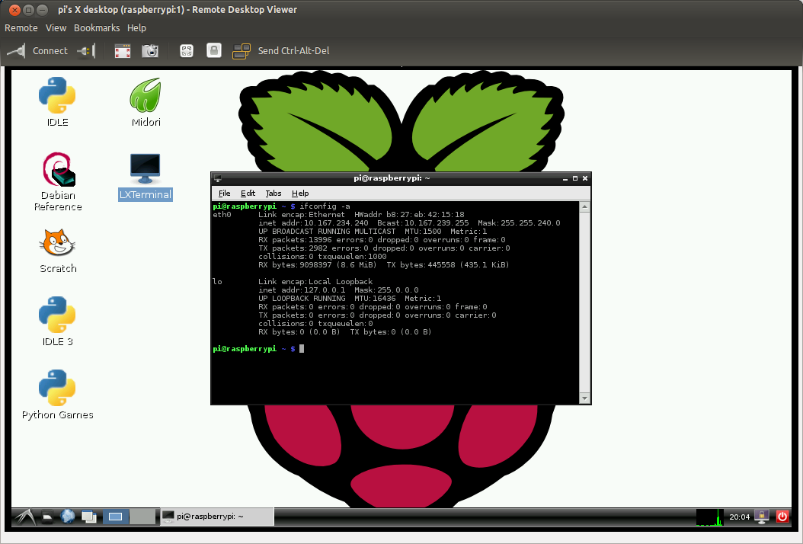
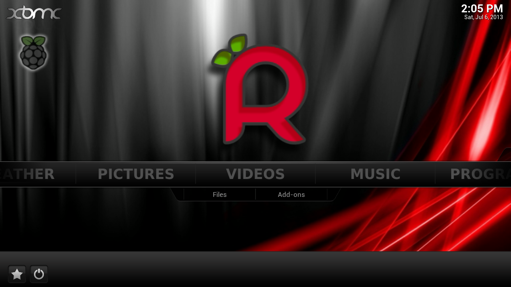
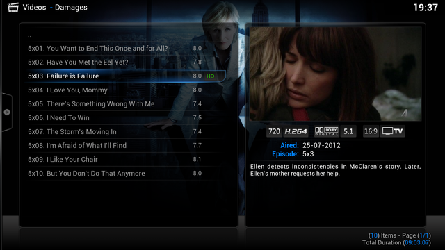
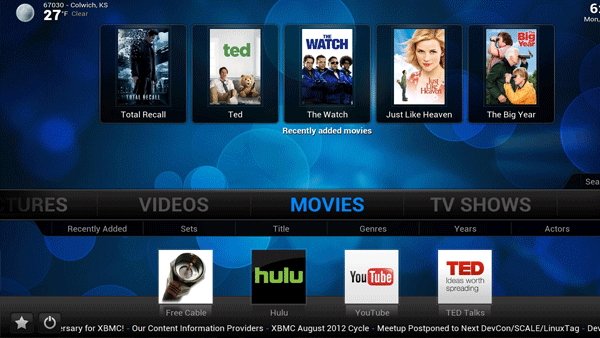
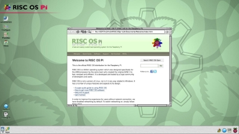
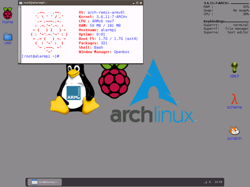
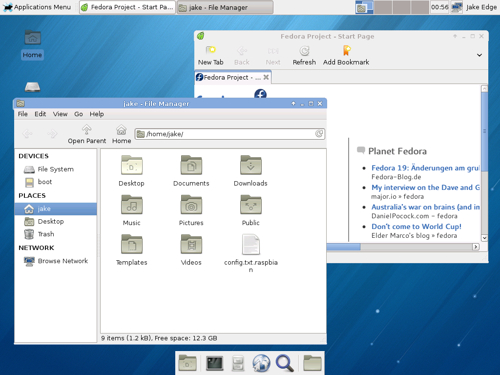

Las distribuciones disponibles para instalar en la Raspberry Pi, básicamente son cualquiera que pueda correr en los proceadores ARM, ya se encuentren en la página oficial de la Raspberry Pi o no.
NOOBS
Se trata de una distribución creada por la comunidad de la Raspberry Pi, pensada para novatos y principiantes en Linux.
Dicha distribución en verdad no se trata de un S.O contiene todos los Sistemas Operativos oficiales por la comunidad, siendo fácil su instalación.
Cuando se instalan NOOBS se comporta como si fuera el Grub. Existen dos modelos de esta
distribución, el modelo completo (NOOBS) en el que se puede instalar los Sistemas Operativos de modo offline ya que posee las imágenes o con conexión a Internet, para descargar alguna versión nueva.
Mientras que el otro modelo reducido (NOOBS Lite) solo se pueden instalar con conexión a Internet, ya que no posee las imágenes en la tarjeta SD.
 NOOBS se puede adquirir en la tienda ya preinstalado en una tarjeta SD o bien descargando las distribuciones.
Descarga NOOBS
Descarga NOOBS Lite
NOOBS se puede adquirir en la tienda ya preinstalado en una tarjeta SD o bien descargando las distribuciones.
Descarga NOOBS
Descarga NOOBS Lite
Raspbian
Se trata de la distribución libre más conocida de la Raspberry Pi, basada en Debian y optimizada para el Hardware de la Raspberry Pi. Raspbian viene con más de 35.000 paquetes, programas precompilados incluido en un formato que hace fácil su instalación. Se puede instalar con o sin interficie gráfica.  Se puede comprar una tarjeta SD con el sistema ya preinstalado en la tienda o bien descargar la imágen. Descarga Raspbian
Raspbmc
Es una pequeña distribución basada en Debian que trae XBMC (ahora llamado Kodi), y además dispone de características para compartir ficheros o carpetas mediante SMB, NFS, FTP, a cualquier ordenador. Por lo que Raspbmc bajo mi punto de vista sería una fusión entre Raspbian y OpenElec. Raspbmc pasará a llamarse OSMC dedicada para la nueva versión de Kodi, también dispondrá de un dispositivo propio llamado Vero.  Raspbmc se puede adquirir en la tienda ya preinstalado o bien descargar la imagen. Descarga Raspbmc
OpenELEC
Es una distribución ligera de Linux dedicada exclusivamente para centro multimedia con XBMC (Kodi), construida desde cero para convertir el ordenador en un centro multimedia, siendo muy rápida y fácil su instalación. Dada su ligereza tarda en encenderse alrededor de unos 15 segundos, dependiendo del hardware. A pesar de que se ejecuta en Linux, no hace falta una terminal de comandos o tener conocimientos para usarlo, ya que su uso y administración se hace de manera gráfica.  OpenELEC se puede adquirir en la tienda ya preinstalado o bien descargar la imagen. Descarga OpenELEC
Xbian
Se trata de una distribución ligera y rápida basada en Debian en el que se centra como centro multimedia con XBMC, y además puede servir como centro de descargas por torrent con transmission, entre otros programas. Bajo mi punto de vista esta distribución no ha tenido tanto éxito como Raspbmc, ya sea por falta de comunidad o poder económico. Su principal diferencia radica en que Xbian se actualiza cada semana, de modo que da igual la versión que se instale, ya que al actualizarlo se pondrá a la última versión. Para poder administrar Xbian se tiene que hacer remotamente, ya sea mediante página web poniendo la IP interna de la Raspberry Pi y el puerto :8080 o bien por SSH.  Xbian se puede adquirir en la tienda ya preinstalado o bien descargar la imagen. Descarga Xbian
Risc OS
Se trata de un Sistema Operativo de escritorio totalmente diferente a las demás ya que no es una versión de Linux ni tampoco relacionado con Windows aunque se le parezca. Es rápido y compacto, dedicado a desarrolladores y usuarios avanzados, con gestor de ventanas que hace fácil el funcionamiento del Sistema.  Risc OS se puede comprar la tarjeta preinstalada con NOOBS o bien descargar la imagen. Descarga Risc OS
Arch Linux ARM
Es una distribución derivada de Arch Linux, optimizada para su uso en equipos ARM, de modo que es ligera, flexible y constante actualización. Deja a los usuarios el control total del sistema, por lo que los usuarios tienen que ser expertos en Linux.  Arch Linux ARM se puede adquirir en la tienda o bien descargar la imagen Descarga Arch Linux ARM
Pidora
Se trata de una distribución combinada con el Software de Fedora y otros miembros de la comunidad de la Raspberry Pi que han sido modificados, para su uso en la RPI. Su uso esta destinado para usuarios avanzados en Linux.  Pidora se puede comprar en la tienda o bien descargar la imagen Descarga Pidora
Versiones no oficiales
Existen versiones que no son oficiales por la Raspberry Pi de momento, pero que pueden correr perfectamente en dicho componente, dado que estan capacitados para el procesador ARM o hayan creado una versión para ello. Tales como Gentoo que se trata de un Sistema para usuarios expertos en Linux del que puedes descargar la imagen aquí. O como Opensuse del que también puedes descargar aquí, entre otras distribuciones.